Numerical Problems
Check out Numerical Recipes
Whats different?
- Issues of Precision and Error. Floating point issues. Use both single and double precision, and think hard when they diverge.
- Extensive Libraries of Code. There is no reason to not to use all thats already written.
Solving Linear Equations
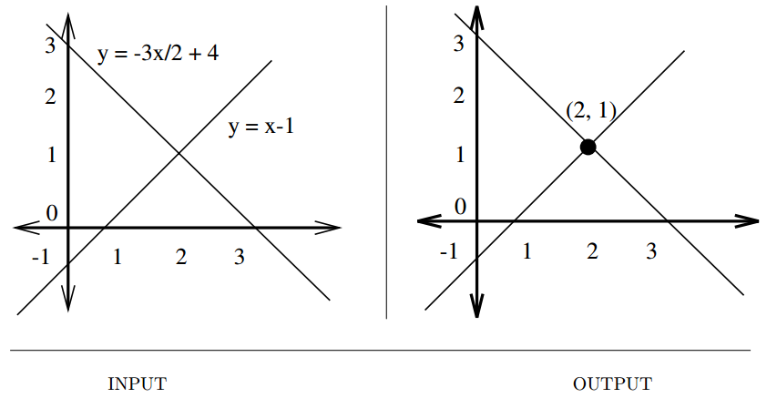
Input description: An $m \times n$ matrix $A$ and an $m \times 1$ vector $b$, together representing $m$ linear equations on $n$ variables.
Problem description: What is the vector $x$ such that $A \cdot x = b$?
- Naive algorithm using Gaussian Elimination is $O(n^3)$.
- Issues to worry about,
- Are roundoff errors and numerical stability affecting my solution? Use library routines.
- Which routine in the library should I use? Reduce to special form for faster implementations.
- Is my system sparse? Use specialized algorithms for faster implementations.
- Will I be solving many systems using the same coefficient matrix? Use LU Decomposition.
$$A \cdot x = (L \cdot U) \cdot x = L \cdot (U \cdot x) = b$$
This gives a solution in two $O(n^2)$ since backsubstitution gives solves triangular system of equations in quadratic time instead of $O(n^3)$, after $LU$ decomposition has been done in $O(n^3)$.
- Implementations
- LAPACK(C/C++)
- JScience, JAMA(Java)
- Related : Matrix multipplication, determinant/permanent
Bandwidth Reduction
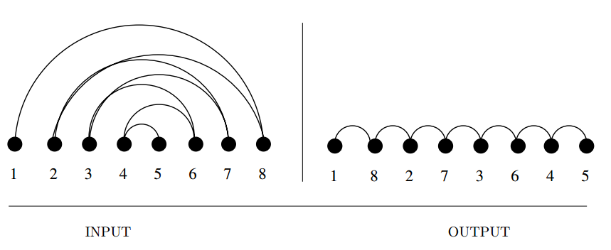
Input description: A graph $G = (V,E)$, representing an $n \times n$ matrix $M$ of zero and non-zero elements.
Problem description: Which permutation $p$ of the vertices minimizes the length
of the longest edge when the vertices are ordered on a line—i.e. , minimizes
$max(i,j) \in E |p(i) − p(j)|$?
- Applied to matrices bandwidth reduction permutes the rows and columns of a sparse matrix to minimize the distance $b$ of any non-zero entry from the center diagonal.
- Gaussian elimination can be performed in $O(nb^2)$ on matrices of bandwidth $b$. This is a big win over $O(n^3)$ if $b « n$.
- An example on graphs
- Arranging $n$ circuit components in a line to minimize the length of the longest wire(and hence time delay) is a bandwidth problem.
- A hypertext application with links on a magnetic tape, we need to store linked objects near each other to minimize search time.
- More general formulations of rectangular circuit layouts and disks inherit the same hardness and heuristics.
- Variations
- In linear arrangement, we seek to minimize the sum of the lengths of the edges.
- In profile minimization, we seek to minimize the sum of one way distances for each vertex $v$ the length of the longest edge whose other vertex is the left of $v$.
- Unfortunately, this is NP-complete, even for a tree, thus or only options are a brute-force search or heuristics.
- Heuristic in worst case $O(n^3)$, close to linear in practice.
- Brute-force in $n!$ possible permutations.
- Implementations
- Del Corso and Manzini’s code for exact solutions to bandwidth problems.
- More references in the book.
- Related : Solving linear equations, topological sort
Matrix Multiplication
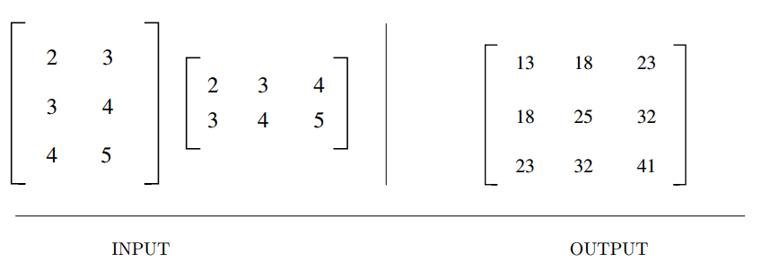
Input description: An $x \times y$ matrix $A$ and a $y \times z$ matrix $B$.
Problem description: Compute the $x \times z$ matrix $A \times B$.
- A fundamental problem in linear algebra.
- Multiplication can done in arbitrary order, with varying costs in $O(xyz)$, but minimum can not be predicted.
- With bandwidth-$b$ matrices, a speedup of $O(xbz)$ can be achieved.
- Strassen’s algorithm using divide-and-conquer runs in $O(n^{2.81})$, but is only practically useful for $n > 100$.
- For long chains on matrix multiplications, dynamic programming can be used to optimize the parenthesization to minimize the dimensions of intermediate results.
- Related : Solving linear equations, shortest path.
Determinants and Permanents
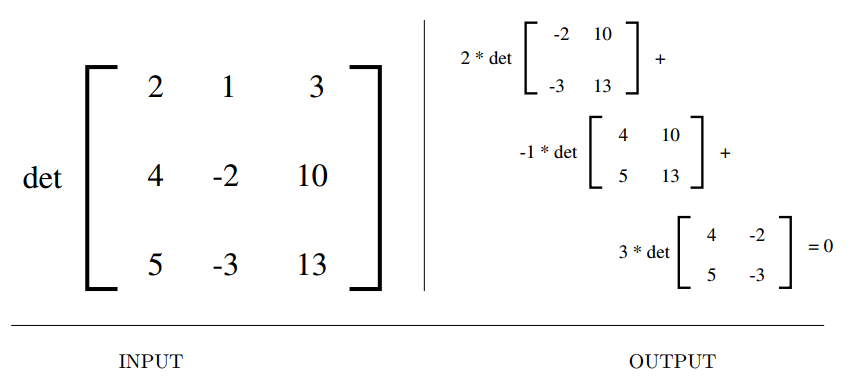
Input description: An $n \times n$ matrix $M$.
Problem description: What is the determinant $|M|$ or permanent $perm(M)$ of the matrix $M$?
- Used to solve a variety of problems.
- Testing if a matrix is singular, i.e. the matrix has no inverse, iff $|M|=0$.
- Test whether a set of points lie in a plane, iff $|M|=0$.
- Test whether a point lies in the left or right side of a line or a plane.
- Compute area or volume of a triangle, tetrahedron or other simplicial complex. $$|M| = \sum_{i=1}^{n!}(-1)^{sign(\pi_i)} \prod_{j=1}^n M[j,\pi_j]$$
- This is $O(n!)$. However can be done faster using LU decomposition in $O(n^3)$.
- Closely related, permanent, counts the number of perfect matchings in $G$, represented by its adjacency matrix $M$. $$perm(M) = \sum_{i=1}^{n!} \prod_{j=1}^n M[j, \pi_j] $$ However, calculating this is NP-hard.
- Related : Solving linear equations, matching, geometric primitives.
Constrained and Unconstrained Optimization
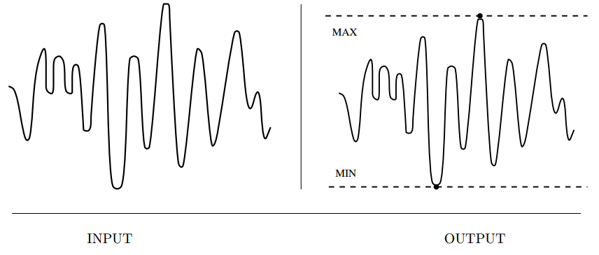
Input description: A function $f(x_1, \ldots , x_n)$.
Problem description: What point $p = (p_1, \ldots , p_n)$ maximizes (or minimizes) the
function $f$?
- Optimization arises whenever there is an objective function that must be tuned for optimal performance.
- Pattern recognition to energy/potential minimization
- Questions to ask,
- Am I doing constrained ot unconstrained optimization?
- Is the function I am trying to optimize described by a formula?
- Is it expensive to compute the function at a given point?
- How many dimensions do we have? How many do we need?
- How smooth is my function?
- Variations of gradient descent and simulated annealing
- Related : Linear programming, satisfiability
Linear Programming
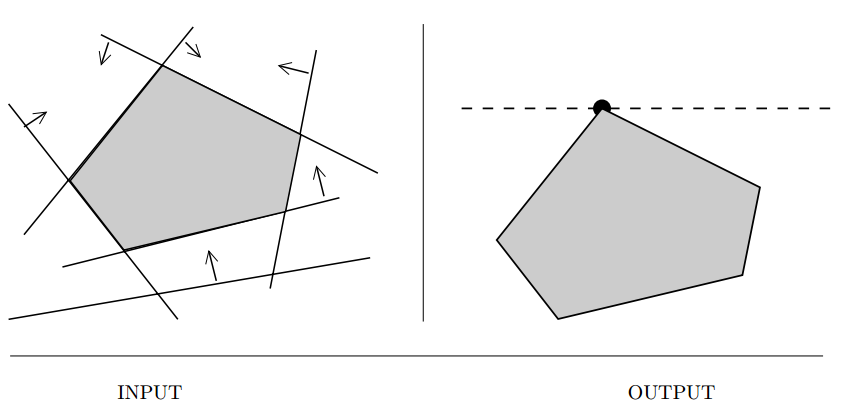
Input description: A set $S$ of $$ linear inequalities on $m$ variables
$$S_i := \sum_{j=1}^m c_{ij} \cdot x_j \ge b_i, 1 \le i \le n$$
and a linear optimization function $f(X) = \sum_{j=1}^m c_j \cdot x_j$.
**Problem description:** Which variable assignment $X'$ maximizes the objective function $f$ while satisfying all inequalities $S$?
- Most important problem in mathematical optimization and operations research.
- Resource allocation
- Approximating the solution of inconsistent equations.
- Graph algorithms : Many can be solved using linear programming, most of the rest can be solved using Integer linear programming.
- The simplex method.
- While a simple algorithm, needs considerable art and the right data structures for large sparse systems.
- Also used, interior-point methods.
- Commercial solutions are of much higher quality than free/open source solutions.
- Questions to ask,
- Do any variables have integrality constraints? Although it is NP-complete, reasonable programs are available.
- Do I have more variables or constraints? If there are more constraints than variables, consider solving the dual LP, which would be much easier.
- What if my optimization function or constraints are not linear? Although fast implementations exist(for quadratic programming), but this is NP-complete.
- What if my model does not match the input format of my LP solver? Map your problem to standard forms.
- Implementations
- Related : Constrained and Unconstrained optimization, network flow
Random Number Generation
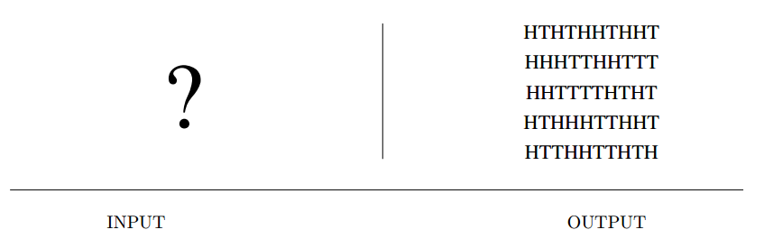
Input description: Nothing, or perhaps a seed.
Problem description: Generate a sequence of random integers.
- Discrete event simulations, passwords and cryptographic keys, randomized algorithms for graph and geometric problems.
Anyone who considers arithmetical methods of producing random digits is , of course, in a state of sin. – Von Neumann.
- However, we can create pseudorandom numbers.
- Questions to ask,
- Should my program use the same random numbers each time it runs?
- How good is my compiler’s built-in random number generator?
- What if I must implement my own random-number generator? $$R_n = (aR_{n-1} + c) \mod m$$
- What if I don’t want such large numbers?
- What if I need non-uniformly distributed random numbers?
- How long should I run my Monte-Carlo simulation to get the best results?
- Related : Constrained and unconstrained optimization, generating permutations, generating subsets, generating partitions.
Factoring and Primality Testing
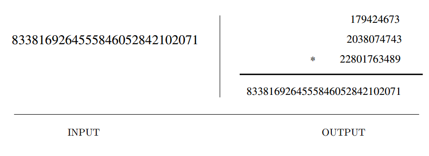
Input description: An integer $n$.
Problem description: Is $n$ a prime number, and if not what are its factors?
- Long suspected of being only of mathematical interest, these problems have surprisingly many applications.
- The RSA, has tables, games.
- Several algorithms and implementations exist for generating and testing prime numbers and factoring(exponential).
- Related : Cryptography, high precision arithmetic
Arbitrary Precision Arithmetic
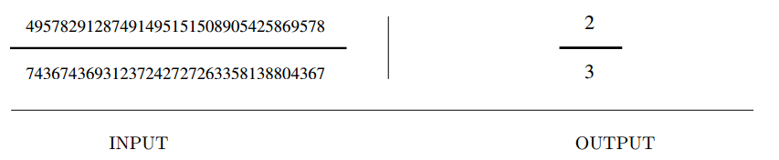
Input description: Two very large integers, $x$ and $y$.
Problem description: What is $x + y$, $x − y$, $x \times y$, and $x/y$?
- Many applications require much larger integers than that can fit into a 32-bit integer.
- Questions to ask,
- Am I solving a problem instance requiring large integers, or do I have an embedded application?
- Do I need high- or arbitrary-precision arithmetic?
- What base should I do arithmetic in?
- How low-level are you willing to get for fast computation?
- The basic operations,
- Addition
- Subtraction
- Multiplication
- Division
- Exponentiation
- Related : Factoring Integers, cryptography
Knapsack Problem
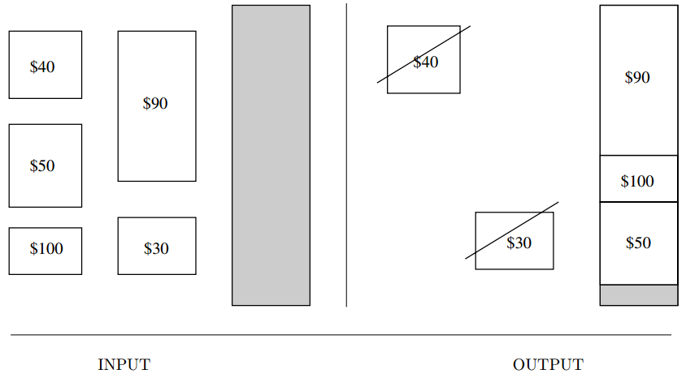
Input description: A set of items $S = {1, \cdots , n}$, where item $i$ has size $s_i$ and value $v_i$. A knapsack capacity is $C$.
Problem description: Find the subset $S' \subset S$ that maximizes the value of $\sum_{i \in S'}v_i$, given that $\sum_{i \in S'}s_i \le C$; i.e. , all the items fit in a knapsack of size $C$.
- Resource allocation and financial constraints.
- Variations
- $0/1$ problem, where objects can not be broken arbitarily. This makes it hard.
- Questions to consider,
- Does every item have the same cost/value or the same size? This becomes easy
- Does each item have the same “price per pound”? NP-complete, but still is considered “easy”. Also called subset problem. Integer partition becomes a special case.
- Are all the sizes relatively small integers? Can be solved in $O(nC)$, $C = $ capacity.
- What if I have multiple knapsacks? Bin-packing problem.
- Greedy heuristics often give “good” approximations.
- Based on ‘price per pound’.
- Convert weights to integers using scaling.
- Related : Bin packing, integer programming
Discrete Fourier Transform
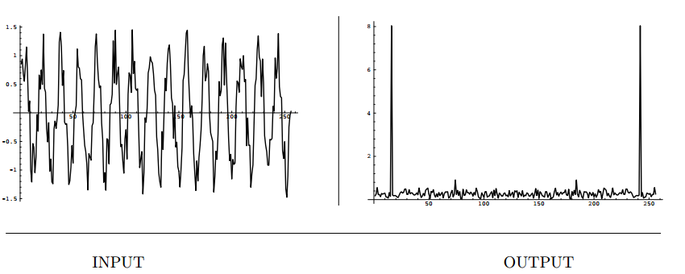
Input description: A sequence of $n$ real or complex values $h_i, 0 \le i \le n − 1$, sampled at uniform intervals from a function $h$.
Problem description: The discrete Fourier transform $H_m = \sum_{k=0}^{n-1} h_k e^{2\pi ikm/n$} for $0 \le m \le n − 1$.
- Electric engineers eat these for breakfast.
- They provide a way to transform samples of a time series into the frequency domain.
- Appplications include,
- Filtering
- Image compression
- Convolution and deconvolution
- Computing the correlation of functions $$z(t) = \int_{-\inf}^{\inf}f(\tau)g(t + \tau)d\tau$$
- Naive implementation works in $O(n^2)$.
- The fast Fourier transform(FFT) computes discrete fourier transform in $O(n \log n)$.
- Often implemented in hardware for real time performance.
- Related : Data compression, high-precision arithmetic